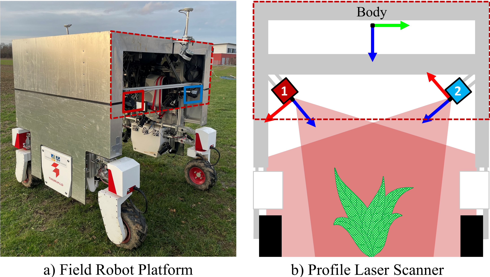

Field robot platform

The field robot, designed for high-resolution 3D reconstruction of plants in agricultural fields, features a Thorvald II base platform with four electric wheels, as shown in the figure. It is extended by a reversed U-shaped aluminum enclosure measuring 2 x 2 x 2 m to mount the sensors and shield them from sunlight and wind. The robot can be steered over the field using a remote control via a Robot Operating System (ROS) interface.
For trajectory estimation, we equipped the robot with an SBG Ellipse D georeferencing system featuring a dual-antenna multi-GNSS receiver that provides position and heading data at 5 Hz via RTK, and IMU data at 100 Hz. We fuse this loosely coupled data using a factor graph, which is optimized to estimate centimeter-level-accurate trajectories in post-processing.
The laser scanning system consists of two industrial-grade laser triangulation scanners LMI Geocator 2490, attached to the inner base frame at the front of the robot. The 2D laser profiles of the scanners point from the left and right into the center of the robot platform, as indicated in the figure b). Each scanner acquires laser profiles at a frequency of 200 Hz synchronized with GPS time using the PPS signal from the GNSS receiver. The spatial resolution along a single laser profile is 0.5 mm at a distance of 1 meter from the plant. The profile-to-profile distances along the trajectory achieve a resolution of 0.5 mm at a robot velocity of 10 cm/s.
3D point clouds
Citation
@data{FK2/HYI2DS_2026,
author = {Esser, Felix and Klingbeil, Lasse and Kuhlmann, Heiner},
publisher = {bonndata},
title = {FieldPheno4D},
year = {2026},
version = {V1},
doi = {10.60507/FK2/HYI2DS},
url = {https://doi.org/10.60507/FK2/HYI2DS}
}
Acknowledgments
This work has been funded by been funded by the Deutsche Forschungsgemeinschaft (DFG, German Research Foundation) under Germany's Excellence Strategy, EXC-2070 - 390732324 (PhenoRob).
This work has been partially supported by the German Federal Ministry of Research, Technology and Space (BMFTR) under the Robotics Institute Germany (RIG).
License
The dataset is distributed under the Creative Commons CC BY 4.0 license, which means you are allowed to share and adapt the dataset as long as you attribute our work. Please see the license webpage for detailed information on the restrictions and terms.